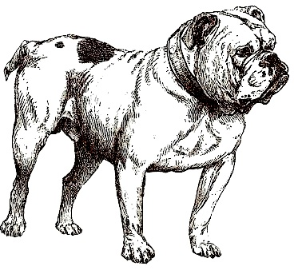

THYMIE
(humeur)
"Le pessimisme est d'humeur : l'optimisme est de volonté." Alain (Émile-Auguste Chartier)
Lorsqu'on parle d'humeur on évoque très souvent l'état dépressif. Mais cela peut également être une nuance de cet état comme avoir "le cafard", "le blues" ou encore une "humeur de chien". Sentir qu'à un moment donné, les pensées se cristallisent, se limitent, tournent en rond plus vite ou au ralenti. Cela peut également être des phases d'excitation de la pensée, une impression de la perte du contrôle de celle-ci ou encore le sentiment de ne plus être adapté dans la relation à soi et à l'autre. Si les troubles de l'humeur relèvent avant tout de la médecine psychiatrique, les recommandations préconisent un recours à la psychothérapie. Depuis une dizaine d’années, l’hypnose a vu ses indications s’étendre à ces troubles psychiques qu'ils soient aigus ou chroniques.
L’hypnose a été identifiée comme l’une des modalités de la conscience dès les années 50. Aujourd'hui l'avancée des neurosciences a permis de montrer un fonctionnement cérébral spécifique du processus hypnotique sur l'humeur par phénomène de neuro-génèse attestant la dynamisation de la plasticité cérébrale. Par exemple, au cours d’une dépression, l’état de conscience est modifié, envahi de pensées et d’émotions douloureuses, incontrôlables. La perception du passé est focalisée vers les moments difficiles allant jusqu’à oublier les aspects positifs.
Cela engendre également la perception omniprésente d'un futur obtus. Il n'y a plus de plaisir ressenti dans les activités habituelles. Une des conséquences est la mobilisation de l'énergie et de l'attention centrées sur le monde intérieur, modifiant les relations avec l'entourage et pouvant provoquer une angoisse majeure. La capacité de raisonnement s’effondre et une sensation d'enfermement psychique inextricable est ressentie.
L’hypnose a été identifiée comme l’une des modalités de la conscience dès les années 50. Aujourd'hui l'avancée des neurosciences a permis de montrer un fonctionnement cérébral spécifique du processus hypnotique sur l'humeur par phénomène de neuro-génèse attestant la dynamisation de la plasticité cérébrale. Par exemple, au cours d’une dépression, l’état de conscience est modifié, envahi de pensées et d’émotions douloureuses, incontrôlables. La perception du passé est focalisée vers les moments difficiles allant jusqu’à oublier les aspects positifs.
Cela engendre également la perception omniprésente d'un futur obtus. Il n'y a plus de plaisir ressenti dans les activités habituelles. Une des conséquences est la mobilisation de l'énergie et de l'attention centrées sur le monde intérieur, modifiant les relations avec l'entourage et pouvant provoquer une angoisse majeure. La capacité de raisonnement s’effondre et une sensation d'enfermement psychique inextricable est ressentie.

L’hypnose génère une modification de l’état de conscience du sujet, contrôlée et réversible dans un cadre thérapeutique. Le patient peut se concentrer, se focaliser sur ce qui est important pour lui. Il peut retrouver un moment structurant de sa vie, une expérience sécurisante mémorisée mais inaccessible dans son état de conscience perturbée.
Cette approche permet de ramener de l'expérience positive, de l'estime de soi, une projection optimiste sur l'avenir ou encore de coloriser les pensées. Lever certains filtres obscurcissant la compréhension du monde du sujet et lui permettre de se voir sortir de sa nébuleuse sont, entre autre, les atouts qu'offre l'hypnose Ericksonienne.
Parfois il suffit simplement de relancer la machine à ressentir afin de pouvoir reprendre le contrôle sur ses pensées. Bien souvent le rôle de l'hypnotiseur est de déshypnotiser le sujet souffrant de ses pensées emprisonnantes.
Cette approche permet de ramener de l'expérience positive, de l'estime de soi, une projection optimiste sur l'avenir ou encore de coloriser les pensées. Lever certains filtres obscurcissant la compréhension du monde du sujet et lui permettre de se voir sortir de sa nébuleuse sont, entre autre, les atouts qu'offre l'hypnose Ericksonienne.
Parfois il suffit simplement de relancer la machine à ressentir afin de pouvoir reprendre le contrôle sur ses pensées. Bien souvent le rôle de l'hypnotiseur est de déshypnotiser le sujet souffrant de ses pensées emprisonnantes.

EN RELATION

SYMPTÔME
LACHER PRISE
FRUSTRATION
ATARAXIE
EMOTION
(bonheur)
ANXIETE